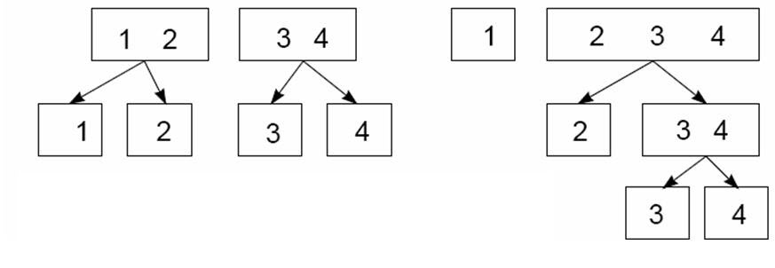

Multinomial
Misc
- AKA Random Utility or Choice Models
- Goal: Model the category probabilities for a polytomous (i.e. # of categoies > 2) response
Let \(\phi_{ij} \equiv \phi_j(\vec{x_i})\) be the probability of response category j for unit i given predictor \(\vec{x_i}\) .
Since the sum of the probabilities of all the categories equals 1, if you know m-1 probabilities for m categories, then you know the probability for the last category, \(\phi_{im}\).
\[ \phi_{im} = 1 - \sum_{j=1}^{m-1} \phi_{ij} \]
The essential idea is to construct a model for the polytomous response composed of m−1 logit comparisons among the response categories in a manner analogous to the treatment of factors in the predictor variables (i.e. creating dummy variables for the m-1 categories).
- Notes from ResEcon 703 Video Course
- Weeks 3, 4, 9, 10, 12, and 13
- Video lectures talk through mathematics (interpretations, motivations, benefits, limitations, etc.) of the approaches. Each week ends with a coding session illustrating the approaches that’s not included in the videos but is included in the slides.
- The slides are updated with new material while the videos have not.
- github with slides and problem sets/solutions with R code. Slides provide a deeper introduction to the application the algorithms and the econometrics. Problem set solutions have similar material but written out more clearly. {mlogit} used throughout.
- Also see:
- Econometrics, Discrete Choice Models
- Diagnostics, Classification >> Multinomial
- Classification >> Discriminant Analysis >> Linear Discriminant Analysis (LDA)
- Model Building, brms >> Logistic Regression
- Packages
- {mlogit} - Enables the estimation of random utility models with choice situation and/or alternative specific variables. The main extensions of the basic multinomial model (heteroscedastic, nested and random parameter models) are implemented.
- {apollo} - Both classical and Bayesian estimation is available, and multiple discrete continuous models are covered in addition to discrete choice. Multi-threading processing is supported for estimation and a large number of pre and post-estimation routines, including for computing posterior (individual-level) distributions.
- {mixl} - Fast (C++) estimation of complex mixed models for large datasets. Allows you to specify multiple utility functions, which is standard practice for more complicated models. (Paper)
- {nestedLogit} - Provides functions for fitting nested dichotomy logistic regression models for a polytomous response.
- Nested dichotomies are statistically independent, and hence provide an additive decomposition of tests for the overall polytomous response. When the dichotomies make sense substantively, this method can be a simpler alternative to the standard multinomial logistic model which compares response categories to a reference level.
- {mnlogit} - (CRAN archived with no github) efficient estimation of MNL for large data sets
- Offers speedups of 10 - 50 times for modestly sized problems and more than 100 times for larger problems. Running in parallel mode on a multicore machine gives up to 4 times additional speedup on 8 processor cores. mnlogit achieves its computational efficiency by drastically speeding up computation of the log-likelihood function’s Hessian matrix through exploiting structure in matrices that arise in intermediate calculations.
- {{torch-choice}} - Choice modeling with PyTorch: logit model and nested logit model
- Can handle big data
- {{xlogit}} - A Python Package for GPU-Accelerated Estimation of Mixed Logit Models
- {{MODE.behave}} - Incorporates estimation routines for conventional multinomial logit models, as well as for mixed logit models with nonparametric distributions
- Makes use of latin hypercube sampling to increase the efficiency of the expectation maximization algorithm during the estimation process in order to decrease computation time.
- Pre-estimated discrete choice simulation methods for transportation research are included
- {glmnet}
- {multgee}
- Use Cases:
- Respondents to a social survey are classified by their highest completed level of education, taking on the values (1) less than highschool, (2) highschool graduate, (3) some post-secondary, or (4) post-secondary degree.
- Women’s labor-force participation is classified as (1) not working outside the home, (2) working part-time, or (3) working full-time.
- Voters in Quebec in a Canadian national election choose one of the (1) Liberal Party, (2) Conservative Party, (3) New Democratic Party, or (4) Bloc Quebecois.
Terms
- Alternative - The levels of a polytomous response in Random Utility Models.
- Choice Probability - The probability that a decision-maker will chose a particular alternative. The predicted response for a Random Utility Model.
- Discounted Utility - The utility of some future event, such as consuming a certain amount of a good, as perceived at the present time as opposed to at the time of its occurrence. It is calculated as the present discounted value of future utility, and for people with time preference for sooner rather than later gratification, it is less than the future utility.
- Marginal Utility - Coefficients in the random choice model. The added satisfaction that a consumer gets from having one more unit of a good or service. The concept of marginal utility is used by economists to determine how much of an item consumers are willing to purchase.
- Market Level - Environment or category where a class or brand of products share the same attributes
- e.g. All Cokes should cost the same in Indianapolis but that price may be different from the price of Cokes in Nashville. Therefore, Indianapolis and Nashville are separate markets.
- Market Share - The percentage of total sales in an industry or product category that belong to a particular company during a discrete period of time. For a Random Utility Model, when the data is at the market level instead of the individual level, the predicted response is the Market Share.
- Outside Product (aka Outside Option) - Typically a “purchase nothing” indicator variable/variable category
- Can just be a vector of 0s
- Random Utility Models - These models rely on the hypothesis that the decision maker is able to rank the different alternatives by an order of preference represented by a utility function, the chosen alternative being the one which is associated with the highest level of utility. They are called random utility models because part of the utility is unobserved and is modeled as the realization of a random deviate.
Multinomial Logit (MNL)
AKA Generalized Logit
When the polytomous response has m levels (aka Alternatives), the multinomial logit model comprises m−1 log-odds comparisons with a reference level, typically the first or last.
- The likelihood under the model and the fitted response probabilities that it produces are unaffected by choice of reference level, much as choice of reference level for dummy regressors created from a factor predictor doesn’t affect the fit of a regression model.
Choice Probability for alternative, i, and decision-maker, n:
\[ P_{ni} = \frac {e^{V_{ni}}}{\sum_j e^{V_{nj}}} = \frac {e^{\hat{\beta}x_{ni}}}{\sum_j e^{{\hat{\beta}x_{nj}}}} \]
The probability that decision-maker, \(n\), chooses alternative, \(i\)
Predicted probability output from the model
Data sets used to estimate random utility models have therefore a specific structure that can be characterized by three indexes: the alternative, the choice situation, and the individual. The distinction between choice situation and individual indexes is only relevant if we have repeated observations for the same individual.
Examples of variable types
- Choice Situation Specific
- data1: Length of the vacation and the Season
- data2: values of dist, income and urban are repeated four times.
- dist (the distance of the trip)
- income (household income)
- urban (a dummy for trips which have a large city at he origin or the destination)
- noalt the number of available alternatives
- Individual Specific
- data1: Income and Family Size
- data2: None
- Alternative Specific
- data1: Distance to Destination and Cost
- data2:
- transport modes (air, train, bus and car)
- cost for monetary cost
- ivt for in vehicle time
- ovt for out of vehicle time
- freq for frequency
- Choice Situation Specific
The unit of observation is therefore the choice situation, and it is also the individual if thereis only one choice situation per individual observed, which is often the case
Data Descriptions
- Each individual has responded to several (up to 16) scenarios.
- For every scenario, two train tickets A and B are proposed to the user, with different combinations of four attributes: price (the price in cents of guilders), time (travel time in minutes), change (the number of changes) and comfort (the class of comfort, 0, 1 or 2, 0 being the most comfortable class).
Dataset in wide format
#> id choiceid choice price_A time_A change_A comfort_A price_B time_B #> 1 1 1 A 2400 150 0 1 4000 150 #> 2 1 2 A 2400 150 0 1 3200 130 #> 3 1 3 A 2400 115 0 1 4000 115 #> change_B comfort_B #> 1 0 1 #> 2 0 1 #> 3 0 0Transform to long format and add index attribute with {dfidx}
Tr <- dfidx(Train, shape = "wide", choice = "choice", varying = 4:11, sep = "_", idx = list(c("choiceid", "id")), idnames = c("chid", "alt"), opposite = c("price", "comfort", "time", "change")) head(Tr, 3) #> ~~~~~~~ #> first 3 observations out of 5858 #> ~~~~~~~ #> choice price time change comfort idx #> 1 TRUE -52.88904 -2.5 0 -1 1:A #> 2 FALSE -88.14840 -2.5 0 -1 1:B #> 3 TRUE -52.88904 -2.5 0 -1 2:A #> ~~~ indexes ~~~~ #> chid id alt #> 1 1 1 A #> 2 1 1 B #> 3 2 1 A #> indexes: 1, 1, 2- In “long” format (default) is a data.frame with a special column which containsthe corresponding indexes. A lot of these argument values are passed to
reshapeto produce the final format. - “varying” - Indicates alternative specific variables which is a numeric vector that indicates their position in the data frame.
- “sep” - In wide format, variable names are of the form,
<var>_choice(default “.”). - “choice” - Indicates the response that has to be transformed in a logical value
- “idx” - Adds attribute which specifies the nesting structure of the id variables
- Each individual faces different choice situations, the “id” variable, which contains the individual index, nests the choice situation variable called “choiceid.”
- Contains the three relevant indexes: choiceid is the choice situation index, alt the alternative index and id is the individual index.
- “opposite” - If you expect negative coefficients, taking the opposite of the covariates will lead to expected positive coefficients. (?)
- In “long” format (default) is a data.frame with a special column which containsthe corresponding indexes. A lot of these argument values are passed to
Add idx attribute to an already long formatted df
MC <- MC <- dfidx(ModeCanada, subset = noalt == 4, idx = c("case", "alt"))- Order of variables doesn’t seem to matter for the “idx” arg in order to specify index types
- The primary dplyr verbs can be applied to dfidx objects
{mlogit}
Indexes: the alternative, the choice situation and the individual.
The distinction between choice situation id and individual id is only relevant if we have repeated observations for the same individual
In docs, the choice situation/individual id is indexed by \(i\) and the alternatives by \(j\)
Types of variables
Type Variable Coefficient Alternative and Choice Situation Specific
Alternative Specific (only)
\(x_{ij}\)
\(t_j\)
\(\beta\) (generic)
\(\nu\) (generic)
Choice Situation Specific \(z_i\) \(\gamma_j\) (alternative specific) Alternative and Choice Situation Specific \(w_j\) \(\delta_j\) (alternative specific) Choice Situation Specific \(v_i\) Influence Variance of Errors Labelling your variables as one of these types isn’t clear-cut, and seems a little closer to an art than a science.
Formula Syntax:
y ~ a | b | c | d- a: Variables with common parameters
- b: Individual-specific variables with alternative-specific parameters
- c: Alternative-specific variables with alternative-specific parameters
- d: Individual-specific variables that affect the scale parameter
dfidxArgsdata: data frame you wanted to be convertedshape: ‘wide’ or ‘long’ for the format of the original data framechoice:- For
shape = "wide": categorical variable that contains the all alternative categories - For
shape = "long": Indicator variable where TRUE is for 1 category and FALSE for everything else
- For
- The fourth argument depends on the format of the original data frame
shape = "wide"-varying: numeric vector defining which variables by column index which contain alternative-specific datashape = "long"-idx: two-element character vector defining which which variables contain identifiers for the choice situation and alternative
Example: Convert data to {dfidx} format
data(Heating, package = "mlogit")Raw Data (wide)
- depvar: Choice set
- gc: gas central
- gr: gas room
- ec: electric central
- er: electric room
- hp: heat pump
- Alternative-specific data (Each variable has 1 column for each alternative)
- ic: installation cost
- oc: annual operating cost
- Household demographic data
- income: annual income
- agehed: age of household head
- rooms: number of rooms
- region: home location
- Others
- idcase: id variable (1 to 1)
- depvar: Choice set
Convert Wide to Long using {dplyr}
heating_long <- heating %>% pivot_longer(contains('.')) %>% separate(name, c('name', 'alt')) %>% pivot_wider() %>% mutate(choice = (depvar == alt)) %>% select(-depvar)- Choice: logical; TRUE if alternative (alt) == gc, otherwise FALSE
- alt: categorical with all alternatives
- demographic variables
- ic and oc: all wide variables pivoted into 2 variables
- As there were 5 variables for each, the id var now has 5 of each id
Convert from Wide
heating_dfidx <- dfidx(heating, shape = 'wide', choice = 'depvar', varying = 3:12) heating_dfidx #> idcase depvar income agehed rooms region ic oc idx #> 1 1 FALSE 7 25 6 ncostl 859.90 553.34 1:ec #> 2 1 FALSE 7 25 6 ncostl 995.76 505.60 1:er #> 3 1 TRUE 7 25 6 ncostl 866.00 199.69 1:gc #> 4 1 FALSE 7 25 6 ncostl 962.64 151.72 1:gr #> 5 1 FALSE 7 25 6 ncostl 1135.50 237.88 1:hp #> ~~~ indexes ~~~~ #> id1 id2 #> 1 1 ec #> 2 1 er #> 3 1 gc #> 4 1 gr #> 5 1 hp #> indexes: 1, 2 print(tibble(heating_dfidx), n = 10) #> # A tibble: 4,500 × 9 #> idcase depvar income agehed rooms region ic oc idx$id1 $id2 #> <dbl> <lgl> <dbl> <dbl> <dbl> <fct> <dbl> <dbl> <int> <fct> #> 1 1 FALSE 7 25 6 ncostl 860. 553. 1 ec #> 2 1 FALSE 7 25 6 ncostl 996. 506. 1 er #> 3 1 TRUE 7 25 6 ncostl 866 200. 1 gc #> 4 1 FALSE 7 25 6 ncostl 963. 152. 1 gr #> 5 1 FALSE 7 25 6 ncostl 1136. 238. 1 hp- “depvar” is a column with all the choice categories (i.e. alternatives)
- It’s a factor type but I’m not sure if that’s necessary. Character type might be sufficient.
- Columns 3:12 are the “wide variable” columns. There’s a column for each alternative category
- Essentially 2 variables and there’s 5 alternatives, therefore, 5 \(\times\) 2 = 10 columns
- “depvar” is a column with all the choice categories (i.e. alternatives)
Convert from Long
heating_long_dfidx <- dfidx(heating_long, shape = 'long', choice = 'choice', idx = c('idcase', 'alt'))- Output is the same except instead of the index columns being named “id1, id2”, they’re named “idcase”, “alt”.
idx: Since the df is already in long format, the id variabler (“idcase”) has multiple observations for each id. Therefore, there needs be more than 1 variable to create a unique identifier (i.e. “alt”).
Nested Logit
- Fits separate models for each of a hierarchically nested set of binary comparisons among the response categories. The set of m−1 models comprises a complete model for the polytomous response, just as the multinomial logit model does.
- Misc
- IIA still holds for two alternatives in the same dichotomy, but doesn’t hold for alternatives of different different dichotomies
- Both MNL and Nested Logit methods have have p×(m−1) parameters. The models are not equivalent, however, in that they generally produce different sets of fitted category probabilities and hence different likelihoods.
- Multinomial logit model treats the response categories symmetrically
- Extensions
- Paired Combinatorial Logit
- Allows alternatives to be in multiple dichotomies and multiple hierarchies and for them to have more complex correlation structures
- In nested logits, only alternatives within the same hierarchy are modeled as being correlated with each other.
- Creates pairwise dichotomies for each combination of alternatives (i.e. each alternative appears in J-1 nests)
- Best for data with fewer alternatives since the parameter space can explode fairly quickly
- Allows alternatives to be in multiple dichotomies and multiple hierarchies and for them to have more complex correlation structures
- Generalized Nested Logit
- Allow alternatives to be in any dichotomy in any hierarchy, but assign a weight to each alternative in each dichotomy.
- Estimate Parameters: \(\lambda_k\) (See Choice Probability below), \(\alpha_{jk}\) : “weight” or proportion of alternative, \(j\), in dichotomy, \(k\)
- Need to be careful about how many dichotomies that you place each alternative, since the parameter space can explode fairly quickly
- Heteroskedastic Logit
Heteroskedacity in this sense means that the variance of the unobserved utility (aka residuals) can be different for each alternative
\[ \mbox{Var}(\epsilon_{nj}) = \frac {(\theta_j \pi)^2}{6} \]
Since there’s no closed form solution, simulation methods must be usded to get the choice probabilities and model parameters.
- Paired Combinatorial Logit
- Construction of Dichotomies
- By the construction of nested dichotomies, the submodels are statistically independent (because the likelihood for the polytomous response is the product of the likelihoods for the dichotomies), so test statistics, such as likelihood ratio (G2) and Wald chi-square tests for regression coefficients can be summed to give overall tests for the full polytomy.
- Nested dichotomies are not unique and alternative sets of nested dichotomies are not equivalent: Different choices have different interpretations. Moreover, and more fundamentally, fitted probabilities and hence the likelihood for the nested-dichotomies model depend on how the nested dichotomies are defined.
- Example: 2 methods of splitting a 4-level response into dichotomies
- Left: Y = {1, 2, 3, 4} → {1,2} vs {3,4} → {1} vs {2} and {3} vs {4}
- Right: (Continuous Logit) Y = {1, 2, 3, 4} → {1} vs {2, 3, 4} → {2} vs {3, 4} → {3} vs {4}
- {1} vs. {2,3,4} could represent highschool graduation
- {2} vs. {3,4} could represesnt enrollment in post-secondary education
- {3} vs. {4} could represent completion of a post-secondary degree.
- Example: {nestedLogit}
See Vignette for additional methods including effects plotting, hypothesis testing, GoF tables, etc.
Data:
- “partic”: labor force participation, the response, with levels:
- “fulltime”: working full-time
- “not.work”: not working outside the home
- “parttime” : working part-time.
- “hincome”: Husband’s income, in $1,000s.
- “children”: Presence of children in the home,
"absent"or"present".
- “partic”: labor force participation, the response, with levels:
Set-up sets of dichotomies that you want analyze
set1 <- logits(work = dichotomy("not.work", working = c("parttime", "fulltime")), full = dichotomy("parttime", "fulltime")) set2 <- logits(full = dichotomy(nonfulltime = c("not.work", "parttime"), "fulltime"), part = dichotomy("not.work", "parttime")) # How set1 response variables would be coded in base-R Womenlf <- within(Womenlf, { work = ifelse(partic == "not.work", 0, 1) full = ifelse(partic == "fulltime", 1, ifelse(partic == "parttime", 0, NA)) })- set1:
- “work”: Women who are NOT working outside the home vs. those who are working (either part-time or full-time).
- “full”: Women who work full-time time vs. part-time, but among only those who work.
- set2:
- “full”: {full-time} vs. {not working, part-time}
- The rationale is that the real hurdle for young married women to enter the paid labor force is to combine full-time work outside the home with housework.
- “part”: {not working} vs. {part-time}.
- “full”: {full-time} vs. {not working, part-time}
- set1:
Fit 1st Set
wlf.nested.one <- nestedLogit(partic ~ hincome + children, dichotomies = set1, data = Womenlf)- Fits 2 glm models
glm(formula = work ~ hincome + children, family = binomial, data = Womenlf)glm(formula = full ~ hincome + children, family = binomial, data = Womenlf)
- A combined model is also produced using the Delta Method
- Estimates are calculated for all models and predicted probabilities for the category levels are from the combined model.
- Fits 2 glm models
Results
# show as odds ratios exp(coef(wlf.nested)) #> work full #> (Intercept) 3.8032 32.38753 #> hincome 0.9586 0.89829 #> childrenpresent 0.2069 0.07055- \(\hat{\beta}_{\text{work, hincome}}\) gives the estimated change in the log-odds of working vs. not working associated with a $1,000 increase in husband’s income and with having children present, each holding the other constant.
- \(\hat{\beta}_{\text{full, hincome}}\) same as above, but gives the estimated change the log-odds of working full-time vs. part-time among those who are working outside the home.
- Interpretation (after exponentiation): The odds of both working and working full-time decrease with husband’s income, by about 4% and 10% respectively per $1000. Having young children also decreases the odds of both working and working full-time, by about 79% and 93% respectively.
Fit 2nd Set
wlf.nested.two <- nestedLogit(partic ~ hincome + children, dictotomies = set2, data=Womenlf)Results
summary(wlf.nested.two) # full #> Estimate Std. Error z value Pr(>|z|) #> (Intercept) 1.7696 0.4690 3.77 0.00016 *** #> hincome -0.0987 0.0277 -3.57 0.00036 *** #> childrenpresent -2.5631 0.3489 -7.35 2e-13 *** # part #> Estimate Std. Error z value Pr(>|z|) #> (Intercept) -1.42758 0.58222 -2.45 0.014 * #> hincome 0.00687 0.02343 0.29 0.769 #> childrenpresent 0.01629 0.46762 0.03 0.972summaryalso shows all the typical model summary info, but only for each dichotomy and not the combined model.Anovawill perform Chi-Square tests on each explanatory variable in each dichotomy and the combined model.- The predictors husband’s income and presence of children affect the decision to work full-time, but not the decision to work part-time among those who aren’t engaged in full-time work. (See “Set-up sets of dichotomies” section describing this set’s rationale)
Compare Models
fit1 <- predict(wlf.nested.one)$p fit2 <- predict(wlf.nested.two)$p diag(cor(fit1, fit2)) #> not.work parttime fulltime #> 0.9801 0.9185 0.9961 mean(as.matrix(abs(fit1 - fit2))) #> [1] 0.01712 max(abs(fit1 - fit2)) #> [1] 0.1484 # GoF logLik(wlf.nested.one) #> 'log Lik.' -212.1 (df=6) logLik(wlf.nested.two) #> 'log Lik.' -211.4 (df=6) AIC(wlf.nested.one, wlf.nested.two) #> df AIC #> wlf.nested 6 436.2 #> wlf.nested.alt 6 434.9- The fitted probabilities are similar but far from the same. (See next section for what “same” looks like)
- Since these models aren’t nested within each other, you can’t compare with an LR test (i.e. use a p-value), but you can still look at the Loglikelihoods.
- The GoF comparison slightly favors the alternative nested-dichotomies model (set2).
Compare Model 2 with Multinomial Logit
wlf.multinom <- nnet::multinom(partic ~ hincome + children, data = Womenlf) summary(wlf.multinom) #> Coefficients: #> (Intercept) hincome childrenpresent #> parttime -1.432 0.006894 0.02146 #> fulltime 1.983 -0.097232 -2.55861 #> AIC: 434.9 logLik(wlf.multinom) #> 'log Lik.' -211.4 (df=6) fit3 <- predict(wlf.multinom, type="probs")[, c("not.work", "parttime", "fulltime")] diag(cor(fit2, fit3)) #> not.work parttime fulltime #> 1 1 1 mean(as.matrix(abs(fit2 - fit3))) #> [1] 0.0001251 max(abs(fit2 - fit3)) #> [1] 0.0006908- The multinomial logit model and the alternative nested-dichotomies (i.e. set2) model produce nearly identical fits with similar simple interpretations.
Mixed Logit
Individual heterogeneity can be introduced in the parameters associated with the covariates entering the observable part of the utility or in the variance of the errors.
- Model creates a distribution of \(\beta\)s, so \(\beta\) is allowed to vary throughout a population.
- The \(\theta\) distribution parameters are what get estimated by the model in order to calculate a distribution of \(\beta\)s (i.e. Bayesian posterior)
- Doesn’t exhibit IIA (See Econometrics, Discrete Choice Models >> Multinomial Logit >> Substitution Patterns) since correlations between alternatives are modeled.
- Model creates a distribution of \(\beta\)s, so \(\beta\) is allowed to vary throughout a population.
Random Coefficients
\[ U_{nj} = \hat{\alpha}\boldsymbol{x}_{nj} + \hat{\mu}\boldsymbol{z}_{nj} + \epsilon_{nj} \]
- \(x_{nj}\), \(z_{nj}\) - data for alternative j and decision maker n
- \(\hat{\alpha}\) - vector of fixed coefficients (i.e. same for all decision makers)
- \(\hat{\mu}_n\) - vector of random coefficients (i.e. a coefficient for each decision maker)
- \(\epsilon_{nj}\) - residual from an extreme value distribution (e.g. Gumbel)
- Correlated Random Utility
- Let \(\nu_{nj} = \boldsymbol{\hat{\mu}}_n \boldsymbol{z}_{nj} + \epsilon_{nj}\) be the random (unobserved) component of utility and \(\mbox{Cov}(\nu_{ni}, \nu_{nj}) = \boldsymbol{z}_{ni} \Sigma \boldsymbol{z}_{nj}\) the covariance between random utilities of different alternatives where \(\Sigma\) is the variance/covariance matrix for \(\boldsymbol{\hat{\mu}}\)
- This is a structure to model the correlation between alternatives
Panel Data
- Data where each decision maker makes multiple choices over time periods
- Model allows for unobserved preference variation through random coefficients, which yields correlations in utility over time for the same decision maker
- Decision maker, n, chooses from a vector of alternatives over T time periods
- Lag or lead predictors can be included
- Lagged responses can be included
- Use cases:
- Habit Formation
- Variety-Seeking Behavior
- Switching Costs
- Brand Loyalty
- Use cases:
- Only models a sequence of static choices
- Lagged responses account for past choices affecting current choices, but not how current choices affect future choices
- A fully dynamic discrete choice model models how every choice affects subsequent choices.
Example: {mlogit}
- “rpar” specifies the random coefficients
Multinomial Probit
- Assumes a Normal distribution of errors which can deal with heteroscedasticity and correlation of the errors.